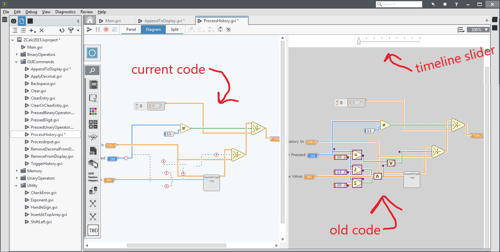

I work on dev tools.
See the discussion of this post on Hacker News.
A study found that Java developers backtracked every 6 minutes, meaning they reverted their code to a previous state (e.g., by clicking undo or pressing Ctrl-Z).1 These undo actions come in bursts and are often followed by successive redo actions. In fact, one participant in a different study used undo/redo 40 times in 5 minutes!2 When asked why they did this, they revealed they were trying to view some intermediate state of the code in the middle of a change.
Why is it so hard to see code from 5 minutes ago while in the middle of a change?
Undo and redo can work great for small episodes of backtracking. However, there are issues: (1) If you go to a prior state and then make a new change, you can no longer redo and all those changes are lost. (2) You can not see a side-by-side comparison of the previous version and the latest version. (3) There is no visual indicator of where you are are in your undo/redo history. (4) Some code editors use a global undo stack while some have an undo stack for each open document, which can mess with your mental model of the ordering you performed actions. (5) I have found many actions in code editors that do not get added to the undo stack (e.g., changing a debugger option), which caused me problems in the midst of an annoying bug. (6) There is no indication of what steps were "big" or how long ago they happened. (6) It is tedious to backtrack one small step at a time.
The list could go on.
Now is about the time that someone usually interrupts with, Why are you relying on undo/redo for this?! Version control solves all of this!
I'll walk through some reasons why version control does not save the day here. While a developer is making changes to code, they may not realize that they want some intermediate version from a few minutes ago until they are well into making the change and become stuck. We saw this repeatedly in our studies. This introduces a problem of premature commitment3, which forces the developer to decide to save an intermediate version (or not to save it) before they have the information needed to make the decision (whether they will need it or not). Unless you commit code to your git repository every few minutes, working or not working, then version control won't help you here.
Developers are often overly confident about finding the information they want and drasticly under estimate the effort required to get to it.4
Want to know what we saw developers doing instead? They either duplicate code files or took screenshots of relevant code while in the middle of a change. Even I have done something similar before: I'm about to mess this up... I'll Ctrl-A and Ctrl-V this into a new tab before it gets too messy, and then I can put the window beside my editor to use as a reference. I even observed a professional developer with 20 years experience doing this!
Back to the question, why is it so hard to see code from 5 minutes ago while in the middle of a change? Why don't code editors better support this behavior?
Back in 2015 while at National Instruments, I started sketching out designs that provide developers the information they want with less effort. It would enable viewing versions side-by-side while automatically record "important" changes. Since I had access to the source code for the LabVIEW code editor, I made a branch for my experimental version of LabVIEW with my features enabled. Although LabVIEW is a visual, drag-and-drop language, the idea still applies to traditional code editors. Then I demo'ed it to dozens of devs, managers, and outside LabVIEW users to get feedback and iterate.
Introducing Yestercode. It lets you swipe through your code history on a timeline, much like you would a YouTube video. As you make edits, it aggregates them and puts a notch on the timeline for that version. You can then use the timeline to go to a previous version, giving you a side-by-side view with the current version of the code. The previous version is read-only, but still allows copying and pasting from it. It also shows annotations so that you know what has been changed in later versions (much like a diff).
A few years ago, I spent a bit of time rebuilding this as an Atom plugin to prove that it is useful for traditional textual code as well.
We don't have to stop there though. I wanted a tool to compare versions of virtually any file, even Word documents, spreadsheets, and PDFs. So I prototyped that too:

Maybe one day the Yestercode features will land in a product!
1 Y. S. Yoon and B. A. Myers, "A longitudinal study of programmers' backtracking," 2014 IEEE Symposium on Visual Languages and Human-Centric Computing (VL/HCC), Melbourne, VIC, Australia, 2014, pp. 101-108, doi: 10.1109/VLHCC.2014.6883030.
2 A. Z. Henley and S. D. Fleming, "Yestercode: Improving code-change support in visual dataflow programming environments," 2016 IEEE Symposium on Visual Languages and Human-Centric Computing (VL/HCC), Cambridge, UK, 2016, pp. 106-114, doi: 10.1109/VLHCC.2016.7739672.
3 T. R. Green and M. Petre, "Usability analysis of visual programming environments: a 'cognitive dimensions' framework," Journal of Visual Languages & Computing, 7 (2), 1996, pp. 131-174 doi: 10.1006/jvlc.1996.0009.
4 D. Piorkowski, A. Z. Henley, T. Nabi, S. D. Fleming, C. Scaffidi, and M. Burnett. "Foraging and navigations, fundamentally: developers' predictions of value and cost," 2016 24th ACM SIGSOFT International Symposium on Foundations of Software Engineering (FSE 2016), Seattle, USA, 2016, pp. 97–108. doi: 10.1145/2950290.2950302